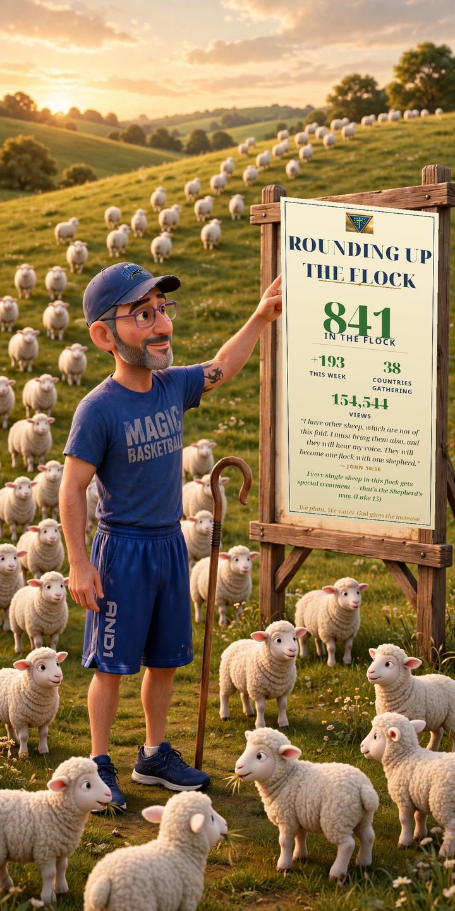

Drag to look around · pinch or scroll to lean in.
Tap Will’s portrait, pinned beside the board.
Will — pinned up with the flock. Every single sheep gets special treatment. (Luke 15)
Raising the board, gathering the sheep.
This little 3D field needs WebGL, and this browser couldn’t open it — so here is the field as a picture instead: Jason beside the counted board, the flock streaming in over the hill. The board reads: Rounding Up the Flock — 841 in the flock, +193 this week, 38 countries gathering, 154,544 views, and John 10:16: “I have other sheep, which are not of this fold. I must bring them also, and they will hear my voice.” Will’s portrait hangs pinned beside that board — every single sheep in this flock gets special treatment (Luke 15).

← Back to Will’s BoardFor Will: a golden pasture at evening. The tall barn board carries the counted flock sign from the TruVINE Field Report family — 841 in the flock, 193 more this week, 38 countries gathering, 154,544 views — and Will's own Pixar portrait is pinned to a smaller board beside it, because every single sheep in this flock gets special treatment (Luke 15). Sheep graze around the boards. Drag to look around; tap Will's portrait for his card.